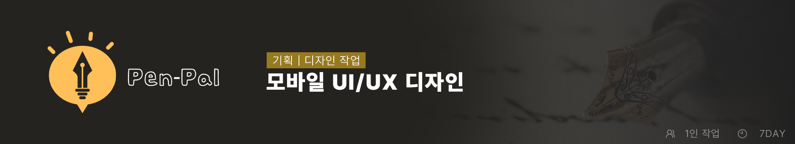
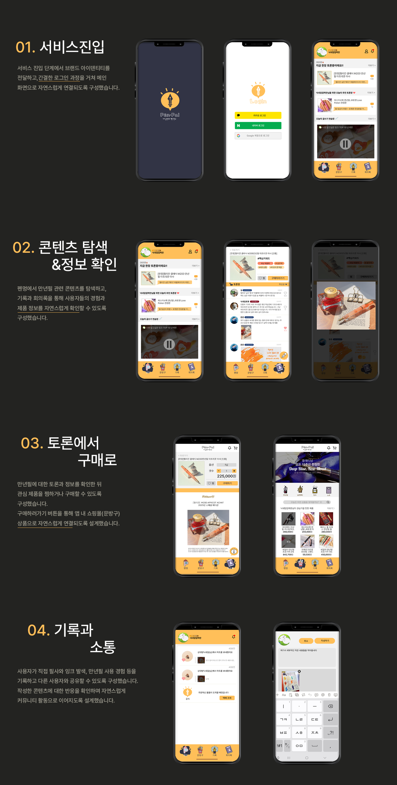
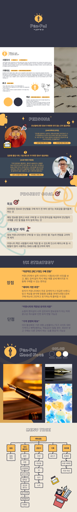

Pen-Pal 모바일 UI/UX 디자인

프로젝트 소개
Pen-Pal은 만년필과 필기 문화를 기반으로 한 모바일 커뮤니티 플랫폼입니다.
만년필의 진입장벽은 낮아졌지만 다양한 가격대와 제품으로 인해 입문자들이 오히려 제품 선택에 어려움을 겪는 점에 주목했습니다. 또한 제품 정보와 리뷰가 여러 곳에 흩어져 있고, 직접 제품을 체험하기 어려운 사용자를 위해 다양한 정보와 사용자 경험을 한곳에서 탐색할 수 있는 서비스를 기획했습니다.
제품 정보와 리뷰, 커뮤니티 콘텐츠를 탐색하고 관련 문구 상품까지 자연스럽게 연결할 수 있도록 서비스 구조와 UI/UX를 설계했습니다.
UI/UX 디자인

프로세스 디자인
